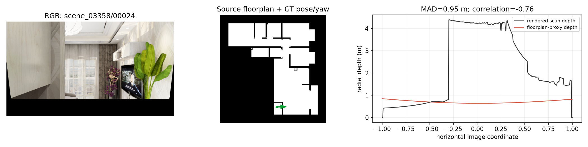
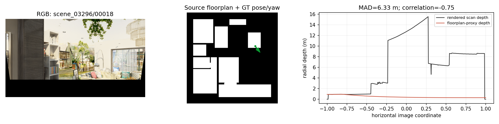
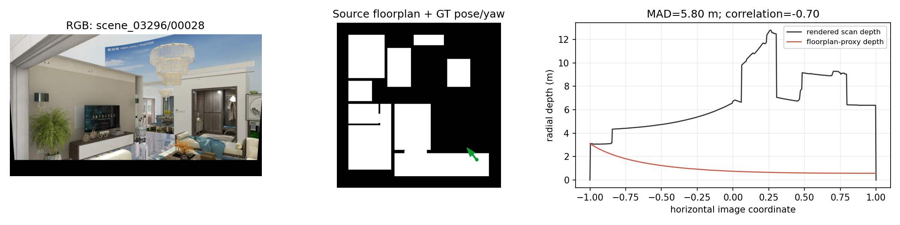
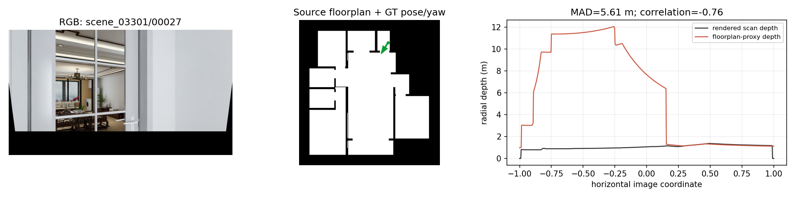
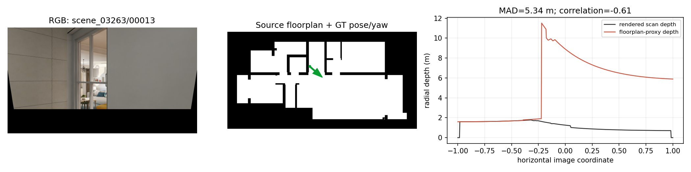
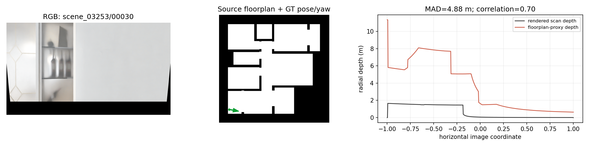

Do not use the flagged views as visual-ambiguity evidence. This test compares rendered scan depth and floorplan-proxy depth at the same stored RGB/pose index. It does not identify whether the cause is a pose/map-frame convention error or a structural representation mismatch, so both possibilities remain open.
depth.png, paired with the same rgb_rawlight.png; it is converted from camera-forward z-depth (mm) to radial range and gravity-aligned exactly as the RGB is.floorplan.glb: the rasterised 2D map walls, floor, and ceiling, at the stored pose/yaw. Thus it is the depth that the current 2D floorplan claims that RGB view should see.|rendered depth − floorplan-proxy depth|. It is a robust typical per-ray disagreement; 0.95 m means at least half of usable horizontal directions differ by about 0.95 m or more.| test views | median profile MAD | profile corr < 0.2 | MAD > 1 m | MAD > 2 m |
|---|---|---|---|---|
| 6040 | 0.056 m | 13.74% | 3.61% | 1.23% |
MAD distribution: p50 0.056 m, p75 0.122 m, p90 0.388 m, p95 0.767 m, p99 2.225 m. The cards below are deliberately selected from the extreme tail, not representative examples.
Questioned scene_03358/00024: scan median 1.71 m; floorplan median 0.70 m; MAD 0.95 m; correlation -0.76. The saved RGB index and pose record match, but this is a geometry-consistency failure.
Download all-test-view metrics (CSV)





